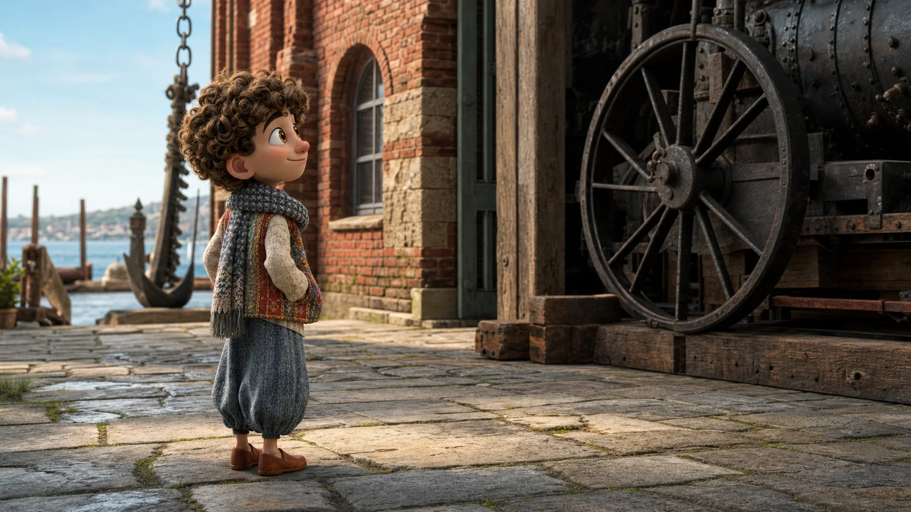
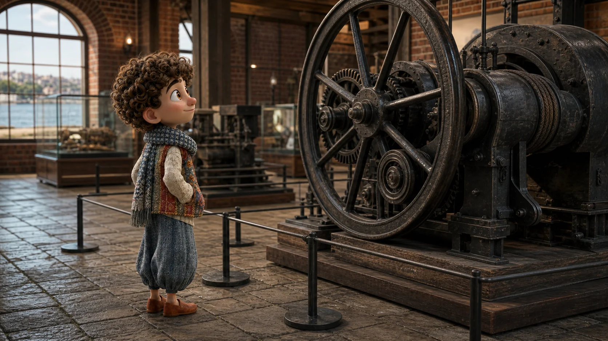
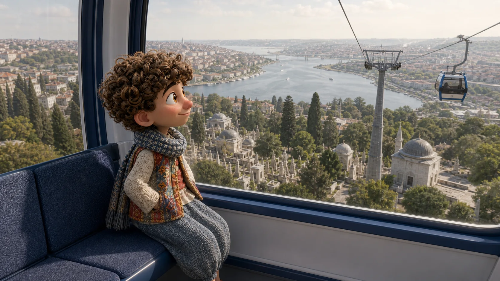
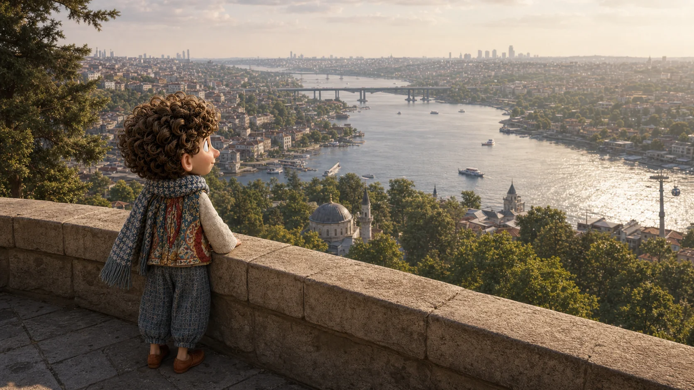

Hogyan működik ez?
Történet 05 · Hasköytől Pierre Lotiig
Előbb belenézünk a gépekbe. Aztán az egyik elvisz minket.
Hasköyben megkérdezzük, mitől mozdul meg valami. Eyüpben beülünk a teleferikbe, és fentről már nem a gépet nézzük, hanem azt, amit megmutatott.
Gyere. Nem tudom minden kerékről, mit csinál. De megkérdezhetjük.


Nem a választ keressük először
Egy jó kérdés közelebb visz, mint egy hosszú magyarázat.
Ali sem tesz úgy, mintha minden fogaskereket ismerne. Megáll melletted, és veled együtt próbálja követni, hogyan jut el a mozgás egyik alkatrésztől a másikig.
Megnézhetjük közelebbről?
A kérdés most továbbindít
A múzeumban azt néztük, hogyan mozdul meg valami. Most mi mozdulunk.
Hasköyből Eyüp felé nem ígérünk képzeletbeli rövid sétát. Megnézzük az aznapi útvonalat, és csak a következő biztos pontot keressük: a felvonó alsó állomását.
Ha útbaigazítást kérszEyüp'e nasıl gidebiliriz?
Hogyan jutunk el Eyüpbe?
Nem kell az egész utat fejben tartanod. Elég, ha a következő helyet megtaláljuk.

Ugyanaz a kíváncsiság, másik oldalról
Az előbb még egy gépet figyeltél. Most az visz felfelé.
A kabin lassan eltávolodik az alsó állomástól. A kábel, a kerék és a mozgás már nem kiállítási tárgy: út lett belőlük.
Az alsó állomást keresveTeleferik nereden kalkıyor?
Honnan indul a felvonó?

Most már tudod, miért jöttünk fel
Fentről már nem a gépet nézed.
Az Aranyszarv hosszan kanyarodik alattad. Amit Hasköyben egy keréknél kezdtél el megérteni, most új nézőpontot adott a városhoz.
Ha megmutatnád, mit kereselHaliç'i buradan görebilir miyiz?
Láthatjuk innen az Aranyszarv-öblöt?
Most már látod, miért hozott fel. Maradjunk csendben egy kicsit.
Amit ezen az úton már meg tudsz kérdezni
Ma már nemcsak irányt tudsz kérni. Azt is meg tudod kérdezni, hogyan működik, amit látsz.
Ez az öt mondat végigvitt a kíváncsiságtól a kilátásig. Más helyzetben is előveheted őket.
Hogyan működik ez?
Megnézhetjük közelebbről?
Hogyan jutunk el Eyüpbe?
Honnan indul a felvonó?
Láthatjuk innen az Aranyszarv-öblöt?
Az öt mondatot egy mozdulattal elteheted Ali zsebébe.
Vissza Ali várostérképéhez